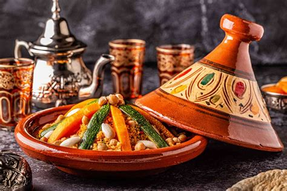
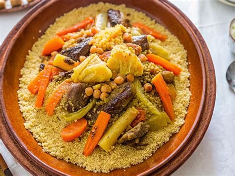
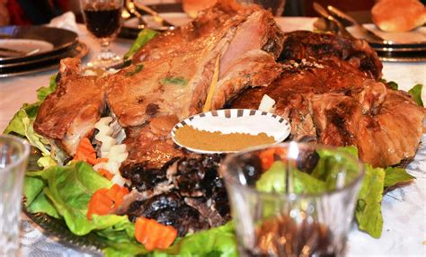
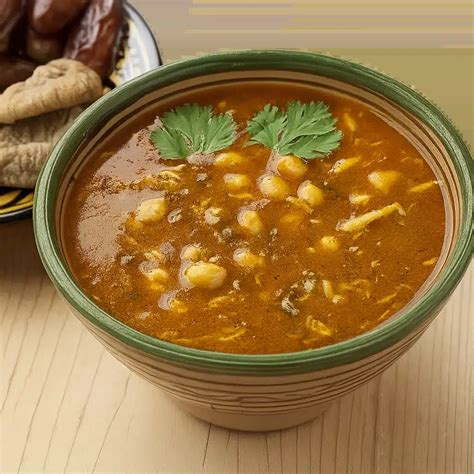

Tajine är en av Marockos mest ikoniska rätter. Den tillagas långsamt i en lergryta och kan innehålla kyckling, lamm, nötkött eller grönsaker. Kryddor som saffran, ingefära, kanel och citron ger en unik smak.
Couscous är Marockos nationalrätt. Den serveras traditionellt på fredagar och består av ångad semolina, grönsaker och kött eller kyckling. Ofta toppas den med karamelliserad lök och russin.
Mechoui är långsamt grillat lamm, ofta tillagat i en jordugn eller över kol. Köttet blir extremt mört och kryddas vanligtvis med kummin och salt.
Lkorain, även kallad Harira, är en traditionell marockansk soppa gjord på tomat, linser, kikärtor och koriander. Den äts ofta under Ramadan men är populär året runt.